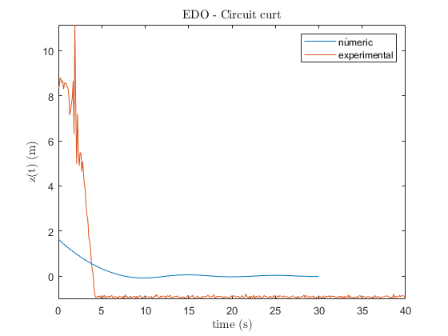

%------------------------------------------- % % P4-EFM-Transitorios hidraulicos % %------------------------------------------- format long disp('P4-EFM-Transitorios hidraulicos') % Constantes g = 9.81; % m/s2 gravedad % Fluido-agua rho = 1000; % kg/m3 mhu = 0.001; % Pa*s % Caracteristicas equipo Dt = 0.0525; % m diametre canonada St = 0.00216; % m2 seccion canonada Dc = 0.1155; % m diametro chimenea Sc = 0.01047; % m2 seccion chimenea H = 2.25; % m nivel deposito epsilon = 0.0046/100; % cm a m rugosidad absoluta % Caracteristicas circuito corto Lc = 5.13; %m Ll = 11.47; %m Kc = 0.30; % constante de perdidas de canto de 45º Kv = 6.90; % constante de perdidas de una valvula esferica Kc1 = 0.95; % constante de perdidas de un canto de 90º Kt = 0.9; % constante de perdidas de una T Ke = 0.5; % constante de perdidas de la salida del deposito Km = 0.6871; % constante de perdidas del medido de cabal Annubar % Solución EDO h0 = 0.617; % m z0 = H-h0; % m delta_h = 400; % mm.c.a %medidor de caudal Annubar F_NA = 0.0065966; % factor de corrección de unidades K = 0.6871; % coeficiente de perdidas del medidor D = 52.5; % mm diametro interior tuberia F_RA = 0.9910; % factor de correccion del Reynolds F_M = 1; % factor de correcion del manometro F_AA = 1; % factor de expansion termica de la tuberia y el Annubar F_L = 1; % factor de correcccion segun la localizaciion del medidor rho_r = 1; % densidad relativa P = F_NA*K*D^2*F_RA*F_M*F_AA*F_L*sqrt(delta_h/rho_r)*1/(1000*60); % l/min a m3/s c = P/St; % m/s velocidad en tuberia dzdt0 = -(St/Sc)*c; %m/s veriacion de altura en condicion inicial % factor de rozamiento Re = rho*c*Dt/mhu; % n de Renyolds eD = epsilon/Dt; % rugosidad / diametro f = (-1.8*log10((eD/3.7)^(1.11)+6.9/Re))^(-2); %factor de Rozamiento de Halland beta = f*Lc/Dt+2*Kc+Kv+Kc1+Ke+Km; % constantes EDO A = beta*Sc/(2*Lc*St); B = St*g/(Sc*Lc); %------------------------------------------------------------------------ % solver EDO % Reescribir la EDO 2n orden a un sistema de EDO's 1r orden syms y(t) [V] = odeToVectorField(diff(y,2) == -(A*diff(y)*abs(diff(y))+B*y)); % Generemos la funcion de matlab M = matlabFunction(V,'vars', {'t','Y'}); %Solucion al sistema de EDO's de 1r orden tspan = 0:0.01:30; % vector de tiempo de simulacion 1ms sol = ode78(M,tspan,[z0 dzdt0]); % plotting figure fplot(@(x)deval(sol,x,1), [0, 30]) title('EDO - Circuit curt','Interpreter','latex') xlabel('time (s)','Interpreter','latex') ylabel('z(t) (m)','Interpreter','latex') hold on plot(times5,(PresinmbargP_difmbar5)) hold off legend('númeric','experimental')
P4-EFM-Transitorios hidraulicos